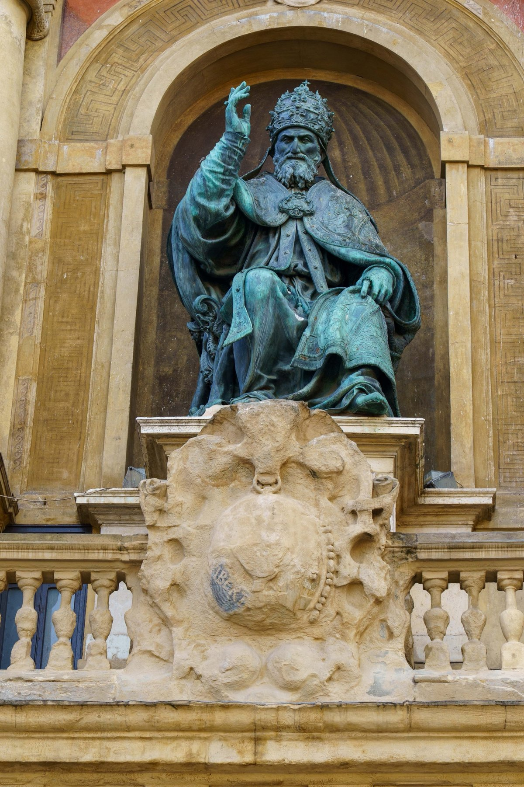
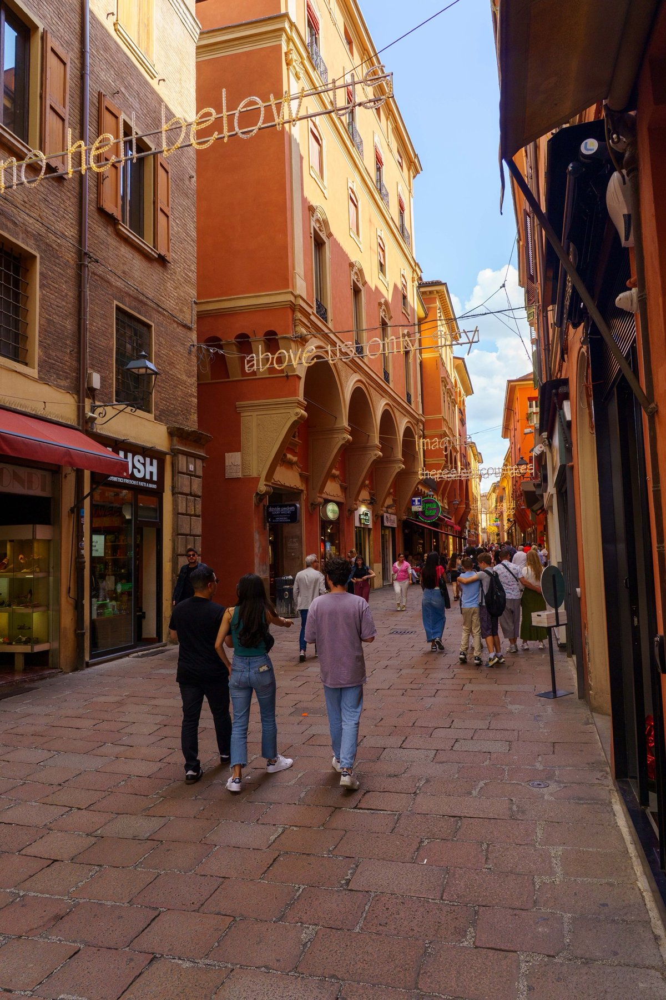
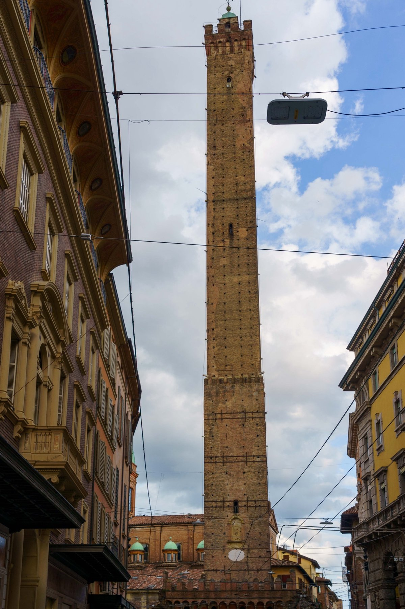
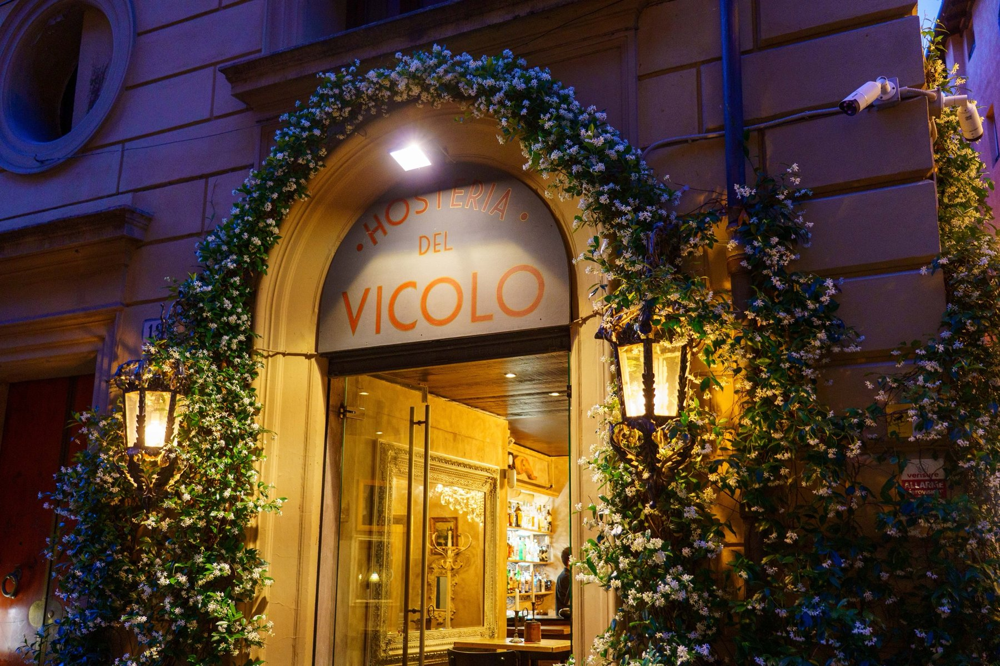
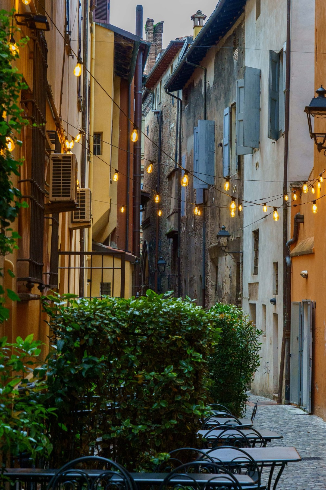
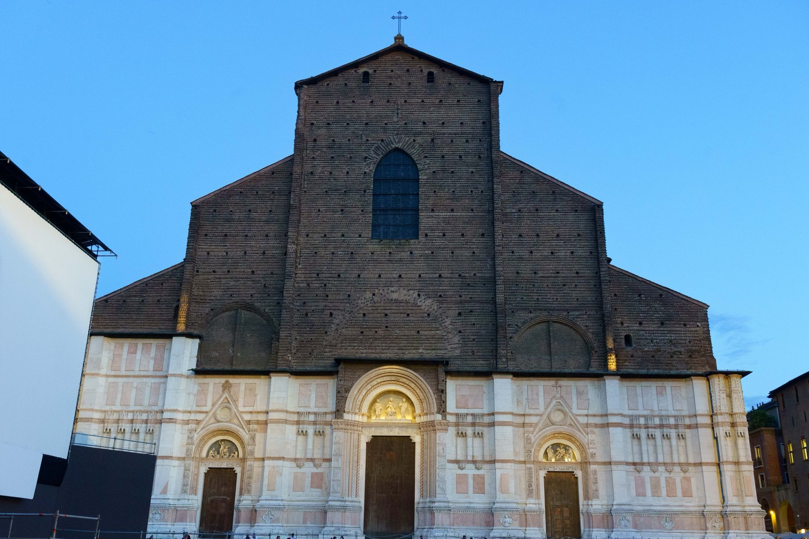
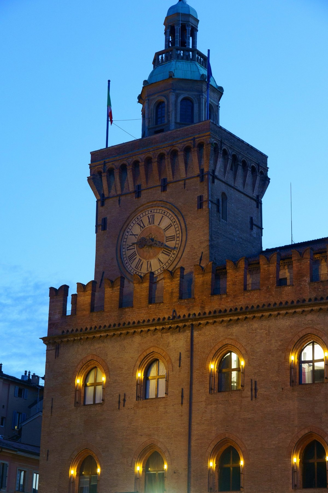

Bologna
Bologna announces its age in brick. Pope Gregory XIII, born in the city and remembered for the calendar that still bears his name, presides in bronze from a niche on Palazzo d'Accursio, its clock tower glowing at dusk. A few blocks over, the porticoed streets carry their own strange poetry — one strung with a neon quotation from Lennon's "Imagine" — before opening toward the Torre degli Asinelli, the taller of the city's two medieval leaning towers. The Basilica di San Petronio interrupts all that red brick with its own unfinished grandeur, marble cladding stopping abruptly halfway up a facade left bare for centuries. As evening comes on, a flower-draped doorway leads into Hosteria del Vicolo, and a quiet side alley strung with string lights and empty café tables waits for the night ahead.






